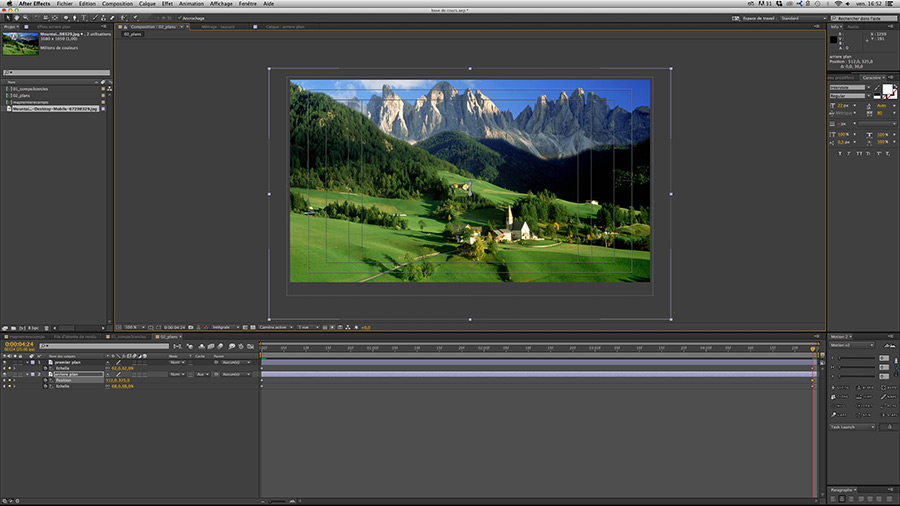

Angus Wall est un editeur, monteur de film et un title designer. Il a travaillé sous la direction de David Finscher pour des publicités, puis a collaboré avec lui sur plusieurs films. Il a reçu de nombreux prix pour ses génériques de film et/ou de série dont Carnival et Game of Thrones.
Càrnival title sequence, 2003 Angus Wall. Dans cette séquence les images ont été détourées, ré-assemblées et composées avec d'autres éléments (films, textes..) pour former le générique de la série. On parle alors de compositing, c'est à dire le mélange de plusieurs sources.
Le musée d'Amsterdam a fait appel a l'agence PlusOne pour réaliser un film voyage de 45 min en 3D mettant en scène l'histoire de la ville d'Amsterdam. Le défi du motion design ici est de donner vie à des chefs d'œuvres sans les dénaturer. Le motion design a été réalisé par Sander van Dijk.
Amsterdam DNA | Revolt, 2012 studio PlusOne. Il s'agit ici aussi d'images détourées puis assemblées pour former un film.
Décomposer une image pour lui donner vie
Exercice de jeu de plan
Les masques
Pour réaliser cette animation il est important de choisir une image diposant d'un premier plan et d'un arrière plan. L'objectif ensuite est de détourer le premier plan de l'image, puis de dupliquer l'image et n'en garder que l'arrière plan. Pour finir il faudra jouer avec le paramètre d'échelle des deux calques pour que l'effet fonctionne.
Les différentes étapes de travail
Avant même de commencer dans After Effects, il faudra bien enregistrer son image dans le sous-dossier import du dossier animation dans lequel on enregistre notre projet.aep. Il faudra aussi bien vérifier que notre image est en RVB et d'une taille supérieure à celle de la composition.
Nous veillerons à travailler à 25 images/seconde, (norme PAL) pour la TV européenne, pour rappel pour le cinéma nous travaillons à 24 images/seconde et aux Etats Unis et au Japon c'est à 30 images/secondes (norme NTSC).
Dans un premier temps il faut importer l'image. Pour ce faire il suffit de double cliquer dans une partie vide du chutier ou de cliquer sur le menu Fichier>Importer>Fichier. Attention a bien choisir métrage dans le menu déroulant de la nouvelle fenêtre lorsque l'on clique sur notre image. Il existe la fonctionnalité séquence qui nous permettra d'importer une suite d'images mais ce n'est pas ce dont nous avons besoin pour le moment.
Ensuite, il faudra double cliquer sur l'image que nous avons importer dans la timeline avec l'outil souris. L'image s'ouvre alors dans un nouvel onglet dans la fenêtre de prévisualisation. Puis il faudra créer un masque tout autour du premier plan de l'image avec l'outil plume.
L'outil plume a deux fonctions, la première est de créer des calques de forme. La deuxième est de créer un masque sur une image, une vidéo ou un solide.
Pour sortir de l'image et revenir dans la composition, il suffit de cliquer sur l'onglet de la composition dans la fenêtre de prévisualisation
Il faudra ensuite dupliquer le calque dont nous venons de masquer une partie.
Puis de positionner le calque dupliqué sous le calque masqué et supprimer le masque du calque d'arrière plan.
Il est possible ensuite de ne plus afficher le masque d'arrière plan en désactivant l'œil dans la colonne du calque puis d'afficher le masque du calque de premier plan et d'ajuster ses valeurs de contour progressif.
Sortir les propriétés echelle des deux calques en appuyant sur la touche S du clavier avec les calques sélectionnés.

Il faudra ensuite faire grossir l'arrière plan et rétrecir le premier plan pour avoir l'effet de mouvement de l'image.
Pour finir il est possible de créer un calque texte que l'on positionne entre les deux calques d'images et de lui faire un mouvement de rebond. After Effects est un logiciel comme Photoshop qui marche par empilement de calque, c'est à dire que le calque qui est le plus haut dans la liste des calque se trouve au dessus de ce qui se trouve plus bas dans la liste.
Aussi, il est possible en faisant un clic droit sur le calque texte de lui appliquer des styles de calque (identiques à ceux de Photoshop) et de jouer avec leurs propriétés.
Les caches
Il existe une autre façon de masquer une image, il s'agit des caches. Il en existe deux types dans After Effects, les caches alpha, et les caches en luminance. Cette technique sert en fait à cacher un calque dans un autre. Un très bon exemple d'utilisation de cette technique est le générique de True Detective. Dans ce générique, une vidéo apparait dans les endroits les plus lumineux d'une autre vidéo, il s'agit des caches.
HBO’s True Detective, 2014 Patrick Clair.
Les différentes étapes de travail
Nous allons travailler ici les caches alpha. La différence avec le cache de luminance est qu'on ne cache pas un calque dans les endroits les plus lumineux d'un autre calque mais à l'intérieur de sa forme.
Pour commencer, il faut créer une composition à partir de la composition que nous avons réalisée, pour ce faire il faut la selectionner depuis le chutier et la glisser sur l'icone de composition en bas du chutier.
Cette étape est importante car il est nécessaire de n'avoir que deux calques pour que l'effet fonctionne, en effet il n'est possible d'appliquer un cache qu'à un seul calque.
Puis il va s'agir de créer un calque de forme, ou bien d'importer une image avec de la transparence puis de la faire bouger.
Une fois les mouvements appliqués au calque de forme, il faut venir dans la colonne cache du calque situé en dessous de la forme puis selectionner Alpha.
La composition du paysage apparait alors dans la forme qui bouge.
L'option Alpha inversé aurait rendue la composition paysage visible partout sauf dans la forme. Quant à Luminance et Luminance inversée il s'agit de faire apparaître l'image cachée tantôt dans les endroits les plus lumineux, tantôt dans les endroits les plus sombres du calque du dessus. Il faut bien retenir que c'est au calque situé en dessous dans l'empilement de calque que l'on va dire de se cacher dans le calque situé au dessus.